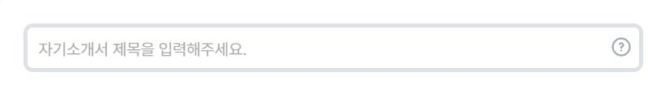
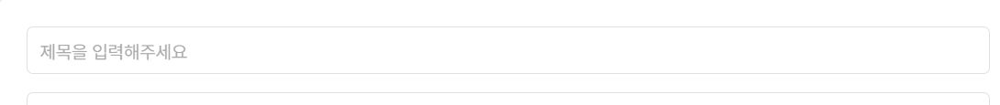

같은 제목 입력창인데 테두리 규격이 다릅니다


같은 제목 입력창인데 테두리 두께와 모서리가 다릅니다. 입력창의 기본 규격을 정해 두면 새 화면에서도 같은 형태로 사용할 수 있습니다. 크기나 강조를 달리할 때도 정해진 종류 중에서 선택합니다.
회사 서비스에서 공통으로 쓰는 UI의 디자인과 사용 방법을 정리한 기준입니다.
버튼, 입력창, 모달을 어떤 모양으로 만들고 어떻게 사용해야 하는지 정해 둡니다. 디자이너는 이 기준으로 화면을 설계하고, 개발자는 컴포넌트와 코드 예제를 가져와 구현합니다.
화면마다 입력창 모양이 다르고 팝업의 닫는 방법도 다르면 사용하기 불편합니다. 개발할 때도 같은 요소를 매번 새로 만들고, 수정할 곳을 화면별로 찾아야 합니다.


같은 제목 입력창인데 테두리 두께와 모서리가 다릅니다. 입력창의 기본 규격을 정해 두면 새 화면에서도 같은 형태로 사용할 수 있습니다. 크기나 강조를 달리할 때도 정해진 종류 중에서 선택합니다.
컨설팅 모달은 닫기 아이콘과 구분선이 있는 틀을 쓰고, 경험리스트 모달은 설명과 버튼을 한 영역에 배치합니다. 내용에 따라 목록이나 버튼 수는 달라질 수 있습니다. 그래도 제목과 본문 사이의 여백, 버튼 스타일, 닫기 방식은 모달의 용도별로 정해 둘 필요가 있습니다.
선택한 항목을 공지사항에서는 주황 밑줄로, 채용공고에서는 검정 채움으로 표시합니다. 용도에 따라 다른 종류를 쓸 수 있지만, 탭과 필터의 사용 기준을 정해 두면 새 화면을 만들 때도 같은 기준으로 선택할 수 있습니다.
공지사항은 회색 채움으로 제목 행을 구분하고, 컨설팅 현황은 글자 굵기와 위아래 선을 사용합니다. 표 제목 행의 배경, 경계, 높이를 공통 규격으로 정하면 목록마다 새로운 스타일을 만들지 않아도 됩니다.
목록에서 페이지를 옮기는 UI도 숫자를 나열하는 방식과 현재 페이지만 표시하는 방식으로 나뉩니다. 두 종류의 사용 조건을 정하고, 버튼 크기·아이콘·선택 표시를 공통 규격에 맞추면 화면마다 따로 구현하는 일을 줄일 수 있습니다.
예를 들어 입력창 높이를 바꿀 때, 화면마다 따로 만든 입력창은 CSS를 각각 찾아 고쳐야 합니다. 공통 컴포넌트를 쓰면 한곳에서 규격을 바꾸고 사용하는 화면들을 확인할 수 있습니다.
| 작업 | 화면마다 정하면 | 공통 기준을 사용하면 |
|---|---|---|
| 입력창 추가 | 높이·테두리·라벨·오류 위치를 다시 정합니다. | 입력창 컴포넌트를 사용하고 필요한 필드와 검증을 추가합니다. |
| 높이 변경 | 각 화면의 CSS를 찾아 고칩니다. | 공통 규격을 바꾸고 각 화면에서 잘 보이는지 확인합니다. |
| 모달 추가 | 제목·본문·버튼·닫기 방식을 새로 만듭니다. | 모달의 기본 틀에 필요한 내용과 동작을 넣습니다. |
이 효과를 얻으려면 실제 서비스 코드에서도 공통 컴포넌트를 사용해야 합니다. 문서만 만들어 놓고 화면마다 따로 구현하면 수정할 곳은 그대로 남습니다.
같은 레고블록을 조립해 성도 만들고, 배도 만들 수 있습니다. 화면도 같은 버튼·입력창·카드를 목적에 맞게 조합해 만듭니다.
레고블록은 크기와 연결 방식이 정해져 있어 서로 맞물립니다. 컴포넌트도 크기와 사용 방법이 정해져 있으면 여러 화면에서 함께 쓸 수 있습니다. 어떤 화면을 만들지에 따라 필요한 컴포넌트를 골라 배치하면 됩니다.
색상, 높이, 간격 등의 값을 이름으로 관리합니다. 예를 들어 기본 색상을 --primary로 정해 두고 버튼과 탭에서 같은 값을 사용합니다.
버튼, 입력창, 카드처럼 여러 곳에서 다시 쓰는 UI 요소입니다. 기본 모양과 선택·오류 등의 상태도 함께 정합니다.
함께 쓰는 컴포넌트의 구성입니다. 예를 들어 입력 폼에서는 라벨, 입력창, 오류 문구, 확인 버튼을 일정한 순서로 배치합니다.
필요한 컴포넌트를 배치한 서비스 페이지입니다. 같은 카드와 입력창을 사용해도 작성 화면과 검색 화면을 다르게 만들 수 있습니다.
두 탭을 눌러 비교해 보세요. 자기소개서 화면에는 입력 폼과 미리보기를, 면접 화면에는 검색창과 카드 목록을 배치했습니다. 두 화면 모두 같은 카드, 입력창, 버튼, 배지, 탭, 체크박스를 사용합니다.
컴포넌트 이름을 누르면 화면에서 사용한 위치를 볼 수 있습니다.
입력한 내용이 미리보기에 표시됩니다.
직무를 검색하고 면접을 선택해 질문을 확인하세요.
면접 3개
고객 문제를 정의하고 우선순위를 정한 경험을 준비합니다.
목록의 상세보기를 누르면 예상 질문이 바뀝니다.
입력 폼과 미리보기를 두 개의 카드로 나누어 나란히 배치했습니다.
DDS(Deep Design System)는 딥레쥬메·딥인터뷰와 앞으로 만들 회사 서비스가 함께 사용하는 디자인 기준입니다.
화면에 필요한 입력창, 버튼, 모달을 찾습니다. 기본 형태와 크기, 선택·오류 상태의 규칙을 확인합니다.
컴포넌트 보기컴포넌트 예제와 공통 CSS를 사용해 화면을 만듭니다. 기존 서비스를 수정할 때는 입력값, 클릭 이벤트, 저장 기능이 그대로 작동하도록 필요한 HTML과 CSS를 수정합니다.
개발 적용 안내 보기마우스를 올렸을 때, 키보드로 선택했을 때, 오류가 났을 때를 확인합니다. 모바일 배치와 실제 입력·저장 기능도 함께 테스트합니다.
접근성 안내 보기AI로 구현할 때는 아래 설정 안내를 먼저 읽게 해 주세요. DDS의 규칙을 어떤 파일에 연결하고, 기존 기능은 어디까지 유지할지 확인할 수 있습니다.
DDS 적용 설정 보기